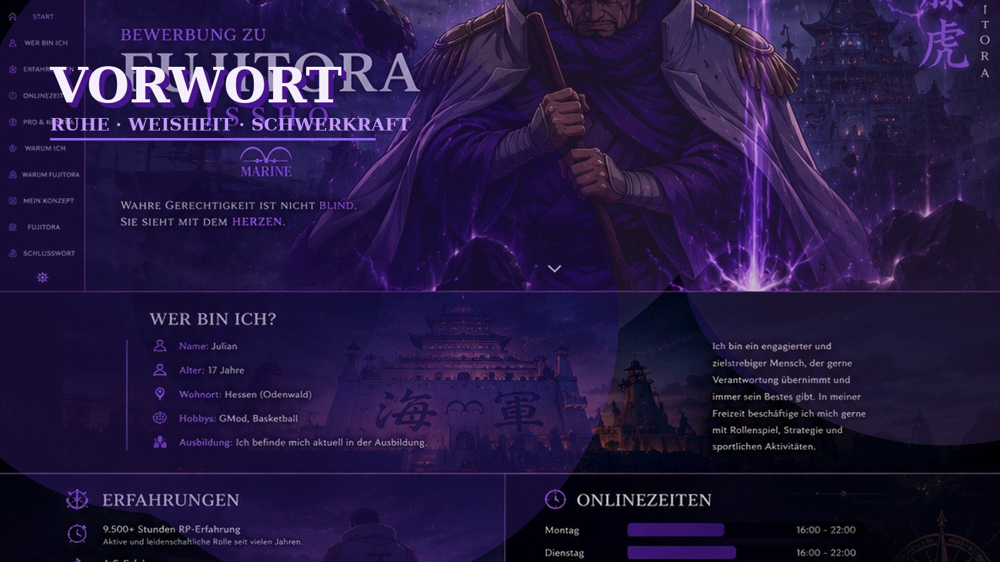
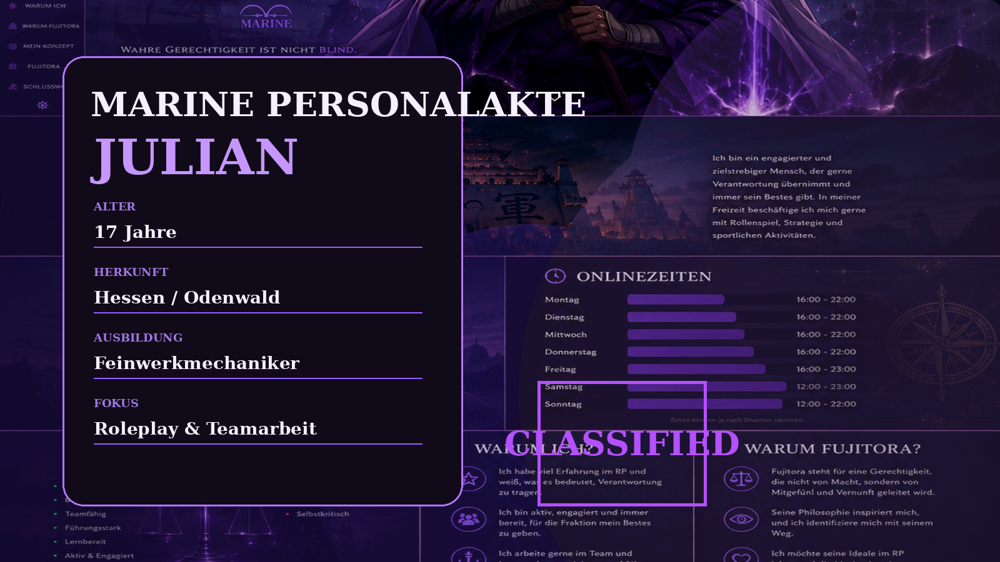
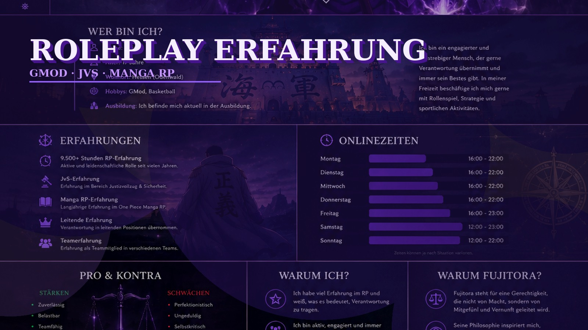
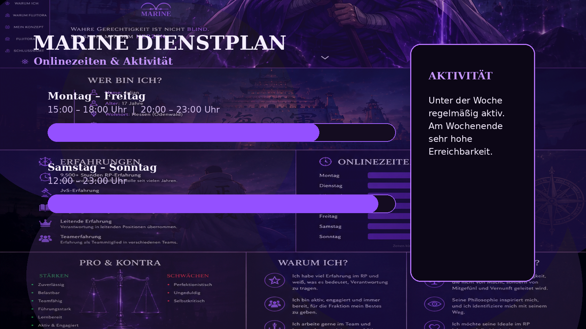
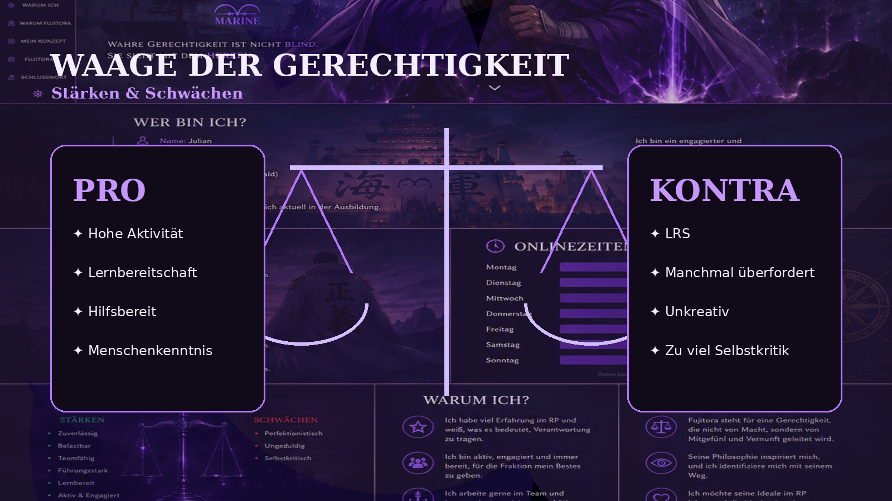
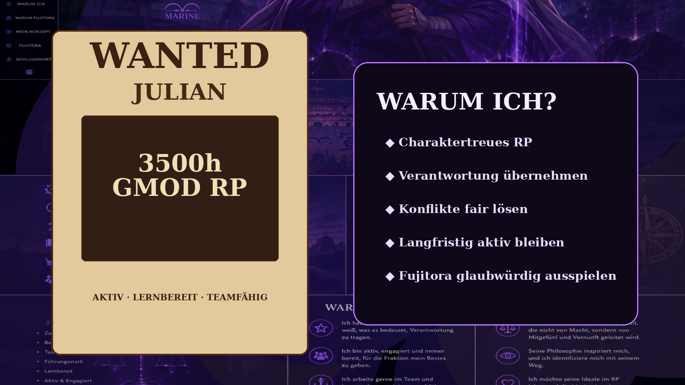
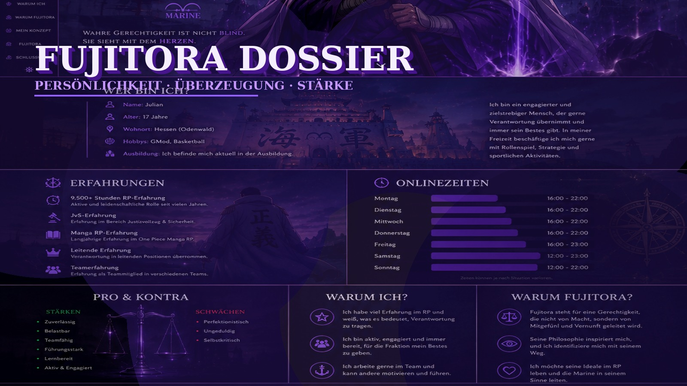
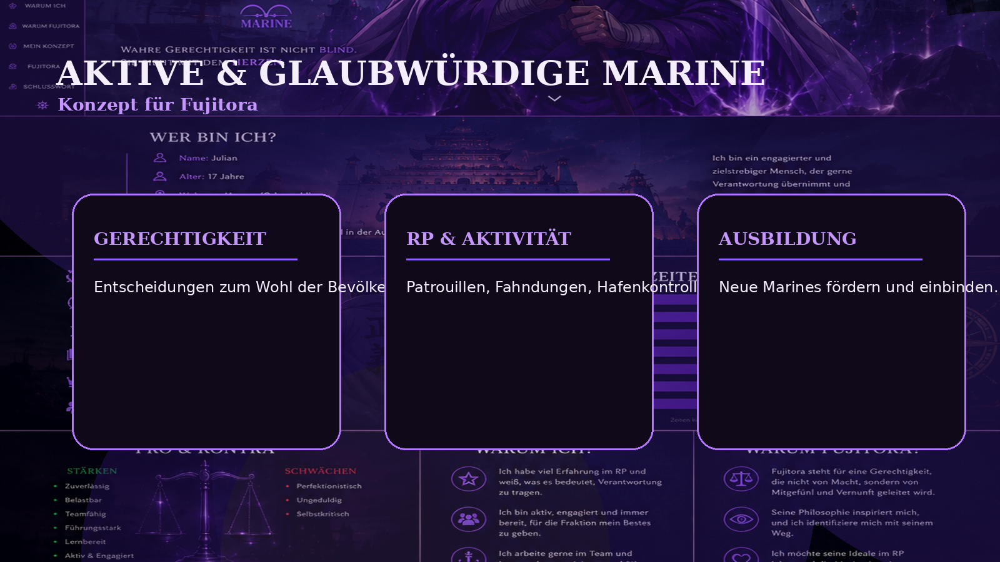
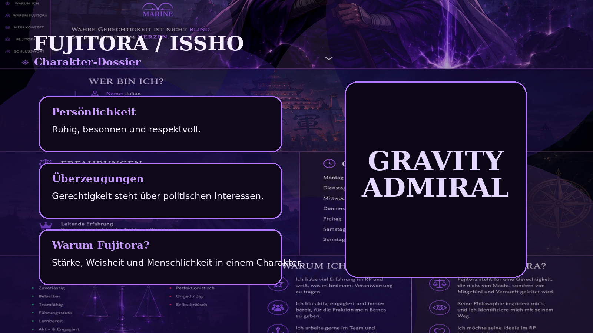
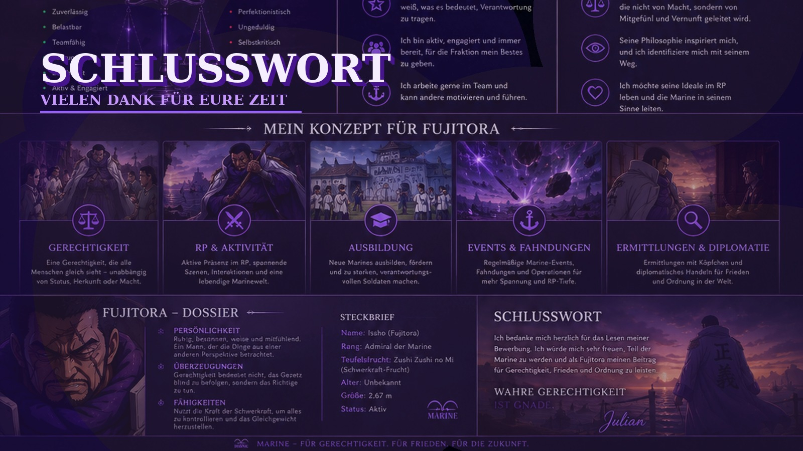

One Piece Roleplay
Bewerbung zu Fujitora
Issho · Marine · Gerechtigkeit · Schwerkraft

Vorwort
Willkommen zu meiner Bewerbung
Hallo und herzlich willkommen zu meiner Bewerbung auf den Charakter Fujitora.
Mit dieser Bewerbung möchte ich euch einen kurzen Einblick in meine Person geben und zeigen, weshalb ich gerne die Rolle von Fujitora übernehmen möchte. Dabei möchte ich euch authentisch vermitteln, warum mich dieser Charakter besonders anspricht und weshalb ich denke, dass ich ihn gut verkörpern kann.
Fujitora überzeugt mich besonders durch seine ruhige Art, seine Weisheit und seinen starken Sinn für Gerechtigkeit.

Erfahrung & Verantwortung
Roleplay-Erfahrung
Durch verschiedene RP-Projekte konnte ich Erfahrung in Teamarbeit, Verantwortung und charaktertreuem Ausspielen sammeln.





Warum Fujitora?
Gerechtigkeit, Weisheit, Menschlichkeit
Ich habe mich auf Fujitora beworben, weil er für Werte steht, die ich an einem Charakter besonders schätze: Gerechtigkeit, Weisheit und Menschlichkeit.
Seine ruhige Art, seine starken Überzeugungen und sein Wunsch, die Welt zu verbessern, machen ihn für mich zu einem der interessantesten Charaktere in One Piece.


Schlusswort
Vielen Dank für eure Zeit
Vielen Dank, dass ihr euch die Zeit genommen habt, meine Bewerbung zu lesen. Ich hoffe, ich konnte euch einen guten Einblick in meine Person, meine Erfahrungen und meine Vorstellungen für Fujitora geben.
Sollte ich die Möglichkeit erhalten, Fujitora zu spielen, werde ich mein Bestes geben, den Charakter aktiv, charaktertreu und mit viel Engagement auszuspielen.
Julian
